Twelve signs, twelve energies. A gentle guide to what each one carries, and where to find its reading.
Astrology, like tarot, is offered here as a mirror for reflection, not a fixed prediction. Read your sign, read another, take what resonates, and leave the rest.
March 21 – April 19 · Fire · Ruled by Mars
The Ram, first sign of the wheel. Aries carries the energy of bold beginnings, the courage to go first, and the honesty of wanting what you want. Its gift is initiative, its lesson is patience.
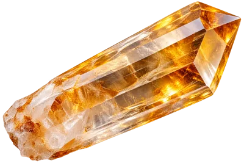
Crystal: Citrine Watch the Aries readingApril 20 – May 20 · Earth · Ruled by Venus
The Bull, steady and grounded. Taurus carries the energy of patience, comfort, and quiet devotion to what is real. Its gift is stability, its lesson is knowing when to let go.
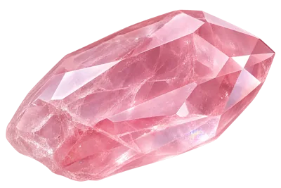
Crystal: Rose Quartz Watch the Taurus readingMay 21 – June 20 · Air · Ruled by Mercury
The Twins, curious and quick. Gemini carries the energy of connection, conversation, and the joy of seeing every side of a story. Its gift is adaptability, its lesson is following one thread all the way through.
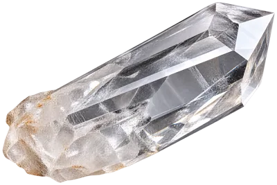
Crystal: Clear Quartz Watch the Gemini readingJune 21 – July 22 · Water · Ruled by the Moon
The Crab, tender beneath a protective shell. Cancer carries the energy of nurture, memory, and deep emotional intuition. Its gift is care, its lesson is trusting others with what it holds inside.
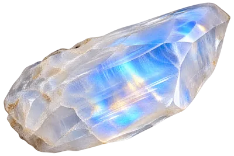
Crystal: Moonstone Watch the Cancer readingJuly 23 – August 22 · Fire · Ruled by the Sun
The Lion, warm and radiant. Leo carries the energy of self-expression, generosity, and a heart that loves openly. Its gift is warmth, its lesson is shining without needing to outshine.
Crystal: Citrine
Watch the Leo readingAugust 23 – September 22 · Earth · Ruled by Mercury
The Maiden, discerning and devoted. Virgo carries the energy of quiet service, careful attention, and the desire to make things better. Its gift is clarity, its lesson is gentleness with its own imperfections.
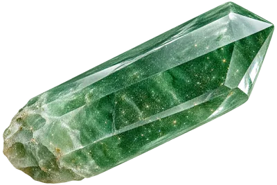
Crystal: Green Aventurine Watch the Virgo readingSeptember 23 – October 22 · Air · Ruled by Venus
The Scales, seeking balance. Libra carries the energy of harmony, fairness, and connection to others. Its gift is diplomacy, its lesson is honouring its own needs as much as everyone else's.
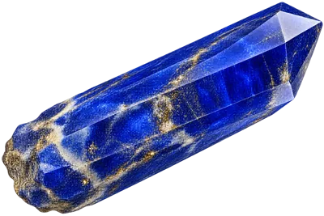
Crystal: Lapis Lazuli Watch the Libra readingOctober 23 – November 21 · Water · Ruled by Mars & Pluto
The Scorpion, intense and transformative. Scorpio carries the energy of depth, honesty beneath the surface, and the courage to change. Its gift is quiet power, its lesson is trust.
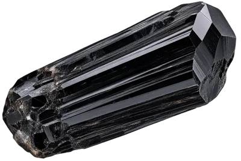
Crystal: Black Tourmaline Watch the Scorpio readingNovember 22 – December 21 · Fire · Ruled by Jupiter
The Archer, always aiming forward. Sagittarius carries the energy of exploration, optimism, and a hunger for truth. Its gift is vision, its lesson is following through on what it aims at.
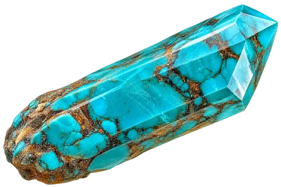
Crystal: Turquoise Watch the Sagittarius readingDecember 22 – January 19 · Earth · Ruled by Saturn
The Sea-Goat, patient and resilient. Capricorn carries the energy of discipline, quiet ambition, and the long climb worth taking. Its gift is endurance, its lesson is resting before the summit.
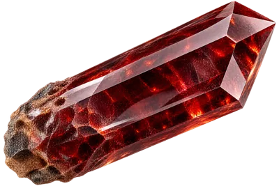
Crystal: Garnet Watch the Capricorn readingJanuary 20 – February 18 · Air · Ruled by Saturn & Uranus
The Water Bearer, original and forward-looking. Aquarius carries the energy of vision, independence, and care for the collective. Its gift is innovation, its lesson is letting itself be known, not just admired.
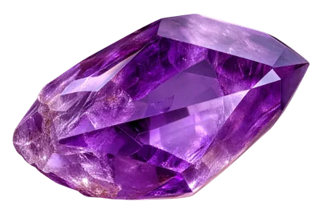
Crystal: Amethyst Watch the Aquarius readingFebruary 19 – March 20 · Water · Ruled by Neptune & Jupiter
The Fish, dreaming and deeply feeling. Pisces carries the energy of compassion, imagination, and a spiritual sensitivity to everything unseen. Its gift is empathy, its lesson is keeping one foot on solid ground.
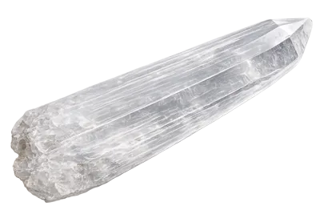
Crystal: Selenite Watch the Pisces readingFind Your Sign's Reading on YouTube
← Back to the Reading Room